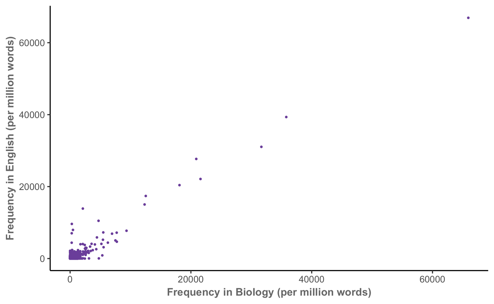
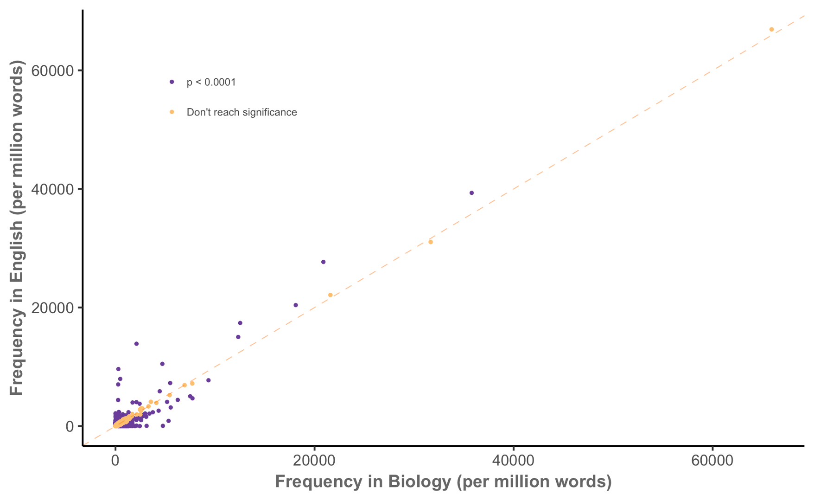
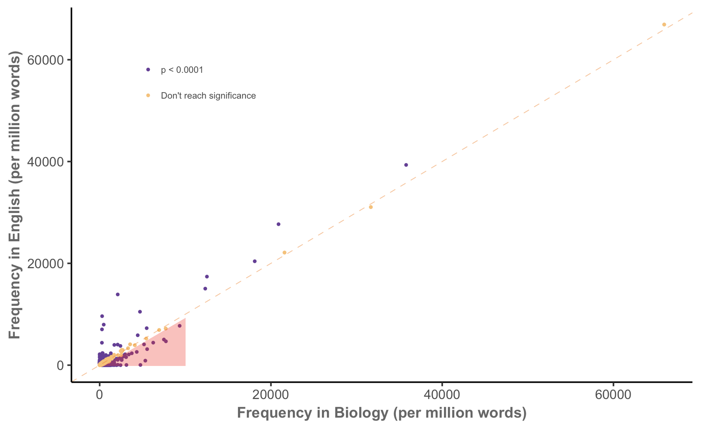
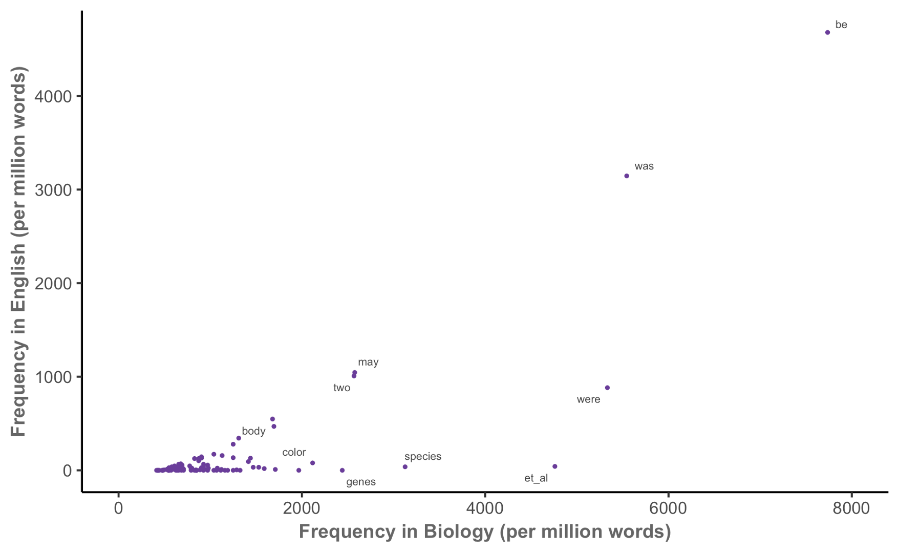
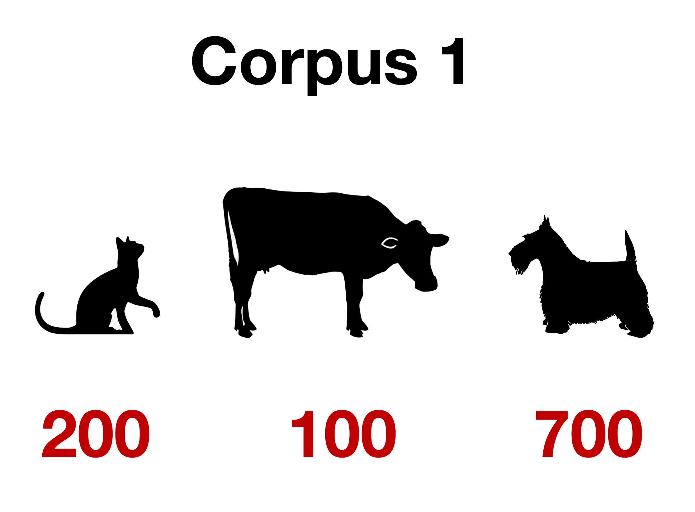
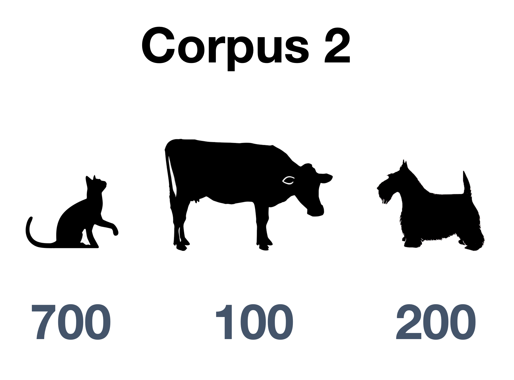
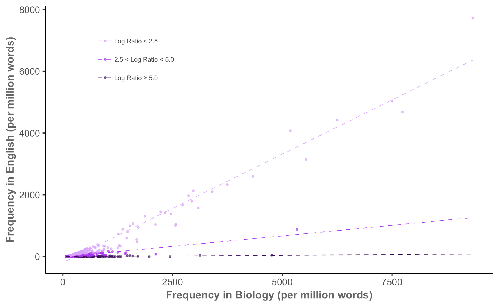

![]()
[1] 2.793864e-117Keyness
Fall 2025
Keyness
- A keyword is a word that is “considerably” more frequent in one corpus than in another
- Keyness is a measure of just how key a word is
Problems:
- What does “considerably” mean?
- How do we measure and compare frequency?
Keyness in biology (MICUSP)

Keyness in biology
Keyness in biology

Keyness in biology

Keyness in biology

How do we compare keyness between corpora?
Treat this as a binomial proportion comparison task:
| Word | Other words | Total | |
|---|---|---|---|
| Corpus 1 | \(O_{11}\) | \(O_{12}\) | \(C_1 = O_{11} + O_{12}\) |
| Corpus 2 | \(O_{21}\) | \(O_{22}\) | \(C_2 = O_{21} + O_{22}\) |
| Total | \(R_1 = O_{11} + O_{21}\) | \(R_2 = O_{12} + O_{22}\) | \(N = C_1 + C_2\) |
Expected counts if use is independent:
\[ E_{ij} = \frac{C_i R_j}{N} \]
Our two corpora
Corpus 1
cat dog dog cow cat dog dog dog dog dog cat dog dog cat dog dog dog dog dog dog dog dog cat dog dog dog dog dog dog dog dog dog cow dog dog dog dog dog cow dog dog cat cat cat dog cat cat dog dog dog dog dog cat dog dog dog dog cow dog dog cow cow cat cat dog dog dog dog cat cat cat dog dog dog dog cat dog dog cat dog dog dog dog dog cat cat dog dog dog dog dog dog cow cow dog cat dog cat cat cow cow dog dog dog dog dog dog dog dog dog cat dog dog dog cat cow cow dog cow cat dog dog cat cow dog dog dog dog dog cat cat cow cow dog dog cow dog dog cat dog cat dog dog dog …
Corpus 2
dog cat cat cow cat cat cat dog cow cat cat cat cat cat cat cat dog dog cow cat cat cat cat cat cat cat cow cat cat dog cat cat cat cat cat cat cow cat cat cat dog cat cat cat cat dog cat dog dog cat dog cat cat cat cat cow dog cat cat cat cat dog dog cat cat cat cat cow dog dog cat cat cat cat cat cat dog cat cat dog cat cat dog cat cat cat dog cat cat cat dog cat cat cat dog cat cat cat dog cow cat cat cat dog dog cat cat cat dog dog cat cat cat cat cat dog dog cat cow cat dog cat cat cat cat cow cat cat cat dog dog cat cat cat cow cat cat cat cow cat cat cat cat cat …
Our two corpora, summarized


Observed frequencies for dog
| Word | Other words | Total | |
|---|---|---|---|
| Corpus 1 | 700 | 300 | 1000 |
| Corpus 2 | 200 | 800 | 1000 |
| Total | 900 | 1100 | 2000 |
Expected frequencies for dog
| Word | Other words | Total | |
|---|---|---|---|
| Corpus 1 | 450 | 550 | 1000 |
| Corpus 2 | 450 | 550 | 1000 |
| Total | 900 | 1100 | 2000 |
\[ E_{11} = \frac{C_1 R_1}{N} = \frac{1000 \times 900}{2000} = 450. \]
Testing keyness
What tests can we use?
- \(\chi^2\) test of independence
- Tests \(H_0\) that word choice is independent of corpus
- The statistic is asymptotically \(\chi^2\) as \(N \to \infty\)
- Approximation is poor when some cells have small values
- …so works poorly for uncommon words
- Likelihood ratio test
- Again, model word use as binomial: \[\begin{align*} O_{11} &\sim \text{Binomial}(C_1, p_1) \\ O_{21} &\sim \text{Binomial}(C_2, p_2) \end{align*}\]
Computing the likelihood ratio
Under \(H_0\), \(p_1 = p_2\). The expected proportion is \[ p_1 = \frac{E_{11}}{C_1} = \frac{E_{21}}{C_2} = p_2. \]
The likelihood ratio test statistic is \[\begin{align*} \lambda ={}& \log\left( \frac{L(O \mid H_0)}{L(O \mid H_A)} \right)\\ ={}& O_{11} \log \frac{E_{11}}{O_{11}} + O_{21} \log \frac{E_{21}}{O_{21}}\\ &{}+ O_{12} \log \frac{E_{12}}{O_{12}} + O_{22} \log \frac{E_{22}}{O_{22}}. \end{align*}\]
Conducting the likelihood ratio test
- For maximum likelihood estimators, \(-2 \lambda\) converges to \(\chi^2\) as \(N \to \infty\)
- This is a better approximation than for the usual \(\chi^2\) test
- \(\lambda\) can be used as measure of keyness difference
- Often only the first two terms are used, as latter two are symmetric: \(O_{12} = C_1 - O_{11}\), and so on
Farmyard likelihood ratio test
Observed
| Word | Other words | Total | |
|---|---|---|---|
| Corpus 1 | 700 | 300 | 1000 |
| Corpus 2 | 200 | 800 | 1000 |
| Total | 900 | 1100 | 2000 |
Expected
| Word | Other words | Total | |
|---|---|---|---|
| Corpus 1 | 450 | 550 | 1000 |
| Corpus 2 | 450 | 550 | 1000 |
| Total | 900 | 1100 | 2000 |
\[\begin{align*} \lambda &= 700 \log \frac{450}{700} + 200 \log \frac{450}{200} + \\ &\qquad 300 \log \frac{550}{300} + 800 \log \frac{550}{800} \end{align*}\]
\[ -2 \lambda = 530.022 \]
Farmyard likelihood ratio test
Since \(-2 \lambda \to \chi^2(1)\) as \(n \to \infty\), the \(p\)-value is given by \(\chi^2(1)\):
This is also known as a G-test, and the statistic is sometimes called \(G^2\)
In practice (keyness.qmd)
In practice (keyness.qmd)
sub_dfm <- dfm_subset(sc_dfm, text_type == "acad" | text_type == "fic")
sub_dfm <- dfm_trim(sub_dfm, min_termfreq = 1)
textstat_keyness(sub_dfm, docvars(sub_dfm, "text_type") == "fic",
measure = "lr") |>
head(n = 10) feature G2 p n_target n_reference
1 i 2350.2083 0 2428 143
2 she 1861.4841 0 1763 70
3 he 1699.1024 0 1978 170
4 her 1453.0085 0 1559 104
5 you 1361.1128 0 1286 50
6 n't 929.2936 0 914 43
7 his 805.0630 0 1155 157
8 my 732.2578 0 758 44
9 me 591.5002 0 557 21
10 him 541.5136 0 548 29Quantifying keyness
Measures of keyness effect size
How do we report keyness?
- Rate in corpus 1: \(O_{11} / C_1\)
- Rate in corpus 2: \(O_{21} / C_2\)
We could report:
- Difference: \(O_{11} / C_1 - O_{21} / C_{2}\)
- Ratio: \((O_{11} / C_1) / (O_{21} / C_2)\)
Small counts may lead to extreme ratios
The log-ratio
\[ \text{LR} = \log_2 \left( \frac{O_{11} / C_1}{O_{22} / C_2} \right) \]
For example, if the word is \(2 \times\) more common in corpus 1 than in corpus 2,
\[ \text{LR} = \log_2(2) = 1. \]
If it is equally common, \[ \text{LR} = \log_2(1) = 0. \]
Calculating log-ratios
| Token | LL | LR | PV | AF_Tar | AF_Ref | Per_10.5_Tar | Per_10.5_Ref | DP_Tar | DP_Ref |
|---|---|---|---|---|---|---|---|---|---|
| of | 1,260 | 1.25 | 4.73 × 10−276 | 4,850 | 2,150 | 3,990 | 1,670 | 0.0924 | 0.151 |
| the | 266 | 0.373 | 8.34 × 10−60 | 8,270 | 6,770 | 6,810 | 5,260 | 0.106 | 0.0985 |
| social | 248 | 4.98 | 6.20 × 10−56 | 208 | 7.00 | 171 | 5.44 | 0.647 | 0.880 |
| are | 222 | 1.44 | 3.24 × 10−50 | 707 | 276 | 582 | 215 | 0.206 | 0.301 |
| studies | 213 | 7.36 | 2.66 × 10−48 | 155 | 1.00 | 128 | 0.777 | 0.672 | 0.980 |
| by | 210 | 1.29 | 1.43 × 10−47 | 790 | 342 | 651 | 266 | 0.165 | 0.222 |
| in | 189 | 0.581 | 4.48 × 10−43 | 2,720 | 1,920 | 2,240 | 1,490 | 0.112 | 0.0906 |
| students | 179 | 5.27 | 6.40 × 10−41 | 146 | 4.00 | 120 | 3.11 | 0.796 | 0.940 |
| research | 175 | 4.74 | 5.20 × 10−40 | 151 | 6.00 | 124 | 4.66 | 0.627 | 0.900 |
| is | 173 | 0.869 | 1.57 × 10−39 | 1,240 | 720 | 1,020 | 560 | 0.225 | 0.364 |
Practical details
Log-likelihood and log-ratios are different
Log-likelihood tells us how much evidence we have that our observed difference is meaningful.
Log ratio tells us the magnitude of the difference.
Just like the difference between \(t\) statistic and \(p\)-value, or \(\hat \beta\) and its \(p\)-value, or…
Remember to check both frequency and dispersion
Frequencies tell us how often tokens occur in a corpus.
Dispersions tell us how tokens are distributed in a corpus.
Scenario 1
You have a collection of words, all with \(0.25 < \text{DP} < 0.5\).
The words are fairly dispersed, so keyness will describe the corpus generally, and the dispersion may have little effect on your analysis
Scenario 2
- You have a constellation of features with high frequencies
- One has \(\text{DP} = 0.75\)
- You may want to exclude it from keyness analysis, since it’s mostly driven by a small portion of texts
Scenario 3
- You have a constellation of features with high frequencies
- One has \(\text{DP} = 0.75\)
- You may want to focus on that word, to see why it is so common in certain texts
Keyness in biology, again
Keyness in biology, again
Keyness in biology, again

Keyness pairs
| Token | A_v_B_LL | A_v_B_LR | A_v_B_PV | A_v_C_LL | A_v_C_LR | A_v_C_PV | B_v_C_LL | B_v_C_LR | B_v_C_PV |
|---|---|---|---|---|---|---|---|---|---|
| he | 494 | 2.32 | 2.01 × 10−109 | −399 | −1.13 | 9.39 × 10−89 | −1,700 | −3.46 | 0.00 |
| said | 456 | 3.69 | 3.27 × 10−101 | 1.95 | 0.130 | 1.63 × 10−1 | −415 | −3.56 | 2.94 × 10−92 |
| i | 432 | 2.36 | 4.90 × 10−96 | −864 | −1.65 | 6.81 × 10−190 | −2,350 | −4.00 | 0.00 |
| n't | 334 | 3.23 | 1.59 × 10−74 | −174 | −1.10 | 9.48 × 10−40 | −929 | −4.33 | 4.21 × 10−204 |
| you | 328 | 3.06 | 2.54 × 10−73 | −414 | −1.54 | 5.85 × 10−92 | −1,360 | −4.60 | 5.93 × 10−298 |
| mr | 237 | 5.10 | 2.02 × 10−53 | 75.3 | 1.61 | 3.98 × 10−18 | −60.9 | −3.48 | 5.90 × 10−15 |
Key of keys
| token | key_range | key_mean | key_sd | effect_mean |
|---|---|---|---|---|
| of | 98% | 60.71 | 37.44 | 1.21 |
| social | 38% | 25.05 | 70.30 | 3.41 |
| studies | 44% | 22.59 | 68.07 | 5.93 |
| students | 16% | 19.67 | 70.34 | 3.56 |
| the | 64% | 19.04 | 28.59 | 0.31 |
| research | 34% | 17.60 | 63.70 | 3.48 |
| political | 26% | 17.02 | 58.07 | 3.78 |
| changes | 44% | 16.54 | 63.12 | 4.71 |
| science | 16% | 15.68 | 60.42 | 3.46 |
| study | 46% | 15.37 | 27.68 | 3.27 |